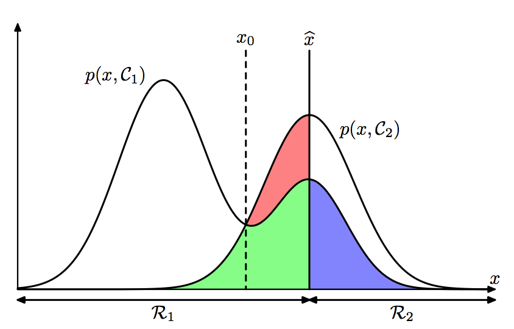

Statistical Modeling Overview and Basic Theory#
Overview#
When discussing modeling it is important to keep in mind that “all models are wrong but some are useful”.1 The world is extremely complex and it can be impossible to create a model that perfectly approximates the underlying mechanisms that make our world turn. There are different approaches to modeling depending on the discipline you come from, but personally I like the idea of the function approximation approach suggested by applied math and statistics. This is the approach that ESL takes. Taking this approach allows us to use probability theory combined with decision theory.
Bishop, from his book Pattern Recognition and Machine Learning, has a really nice overview of some of these concepts. The starting point for modeling, at least in a supervised setting, starts with the independent variable or covariate \(X\) and dependent variable \(Y\) (see notation section). We want to know:
The nature of the relationship between the variables (inference).
Given an independent variable, determine the dependent variable (prediction).
Bishop mentions that by using probability we can completely summarize the relationship and the uncertainty between the two variables with the joint distribution \(P(X,Y)\). We use probability because for many problems we are interested in, we generally cannot come to a completely deterministic relationship between the independent and dependent variables. This is partly because of measurement error, but also because the number of independent variables needed to perfectly determine the dependent variable is potentially infinite.
For example, imagine we wanted to predict the number of ice cream cones we will sell on a particular day. Some variables such as the time of year or location of the ice cream store may provide us enough information to make a pretty good prediction or to understand the relationship between some independent and dependent variables fairly well. But to perfectly predict the number of ice cream cones we would need to know everything from the state of the road conditions, to whether or not a family from out-of-state decided to take a vacation. Since this is impossible, we acknowledge variability and error in our estimates using probability.
The key to understanding this is to remember that the moment we use only a subset of all the possible features we would need for a perfectly deterministic relationship, then we must introduce uncertainty. We cannot say for certain that only knowing today is July 1 will lead to high ice-cream sales, but we can say the probability is higher than January 1st. When I have a training sample \((x_1,y_1),(x_2,y_2),...(x_n,y_n)\), I treat this as the truth (which it is), but I need to remember that these are draws coming from a distribution. I guess in that sense \(P(X,Y)\) is a model itself, something we are forced to use because we don’t know all the features needed for a deterministic relationship.
One side note to make here is, as ESL mentions, sometimes the relationship IS deterministic, but the randomness comes from the fact that we have limited data. If we have a different training data set then we get different results, but the underlying relationship is still the same since it is deterministic. These types of problems can be handled by similar techniques where the relationship between the variables is probabilistic (see pg 28 of ESL). Along the above point, it may be tempting to think that the more features the better because we would be getting closer to a deterministic relationship where we could predict perfectly. The issue with this however is related to the problem just mentioned that when we build models we have only a sample from the distribution. We could then start to tune our model to the specific data set but not the true distribution. So I imagine a lot of features would be fine to have, but only if we have more and more data that approximate the true distribution. See the section on Curse of Dimensionality for more discussion along this point.
Decision Theory#
As mentioned above, one key area of interest in understanding the relationship between X and Y is inference, or in other words understand what \(P(X,Y)\) looks like using information from a sample. This can give us an understanding of how the variables are related. In many practical applications however, we want to be able to predict \(Y\) given \(X\). This is where decision theory comes into play. Decision theory is designed to help us make the optimal decision given inputs. Bishop gives a nice overview I try to summarize in my own words below.
Let’s approach this by treating the dependent variable \(Y\) as a categorical variable taking on values 0 or 1. For simplicity assume \(X\) is a single continuous variable. We then have for \(P(X,Y)\) a three-dimensional distribution where \(P(Y|X)\) is a probability mass function. When making a decision called the decision step we formulate some rule that divides the input space into decision regions. If an instance falls into a certain decision region (based on \(X\)) it is predicted to be a 0 or 1. We want to minimize our mistakes as much as possible so we aren’t assigning an instance to 0 when it should really be 1. The probability of a mistake can be written as:
where \(R_1\) is the region where an instance is assigned a 1 and \(R_0\) is the region where an instance is assigned a 0.
Back to our example from before. Instead of ice cream sales, treat \(Y\) as a categorical variable where 1 is a “good” ice cream sales day and 0 is “bad”. If \(x_1\) = “July 1st” is in \(R_1\) we decide to assign it a 1, based on our decision rule. However, even though our model \(P(X,Y)\) says that the probability of a high-selling day \((Y=1)\) is high in this region, there is a still a chance that it is a low-selling day because again, we are using a probability distribution for a model since we don’t have all of the features we need for a deterministic model. The probability of it being a low-selling day for all \(X\) in \(R_1\) is \(P(X ∈ R_1,0)\), which is a mistake.
We want to minimize our mistakes as much as possible so we choose regions where \(P(X ∈ R_1,0) + P(X ∈ R_0,1)\) is as small as possible. To me it is easier to see this by thinking of the probability of being correct instead of the probability of being incorrect. This changes the problem from one of minimization to one of maximization. The optimal decision boundary therefore is the location that creates \(R_1\) and \(R_0\) such that \(P(X ∈ R_1,1) > P(X ∈ R_1,0)\) everywhere in \(R_1\) and \(P(X ∈ R_0,0) > P(X ∈ R_0,1)\) everywhere in \(R_0\). If the decision boundary were shifted either way then we would loose out on area under the distribution of being correct.

Figure 1.1: Plot from Bishop showing visually the optimal decision boundary
To visualize this better refer to figure 1.2 from Bishop which is on pg 40 in his book. If our decision boundary were at x0 then the probability of being correct would be the two humped distribution completely colored in. This is the largest the probability of being correct can be. If we went with xˆ however, then we loose out on the red region for being correct, which is suboptimal. (I like to think of a three dimensional distribution here whereas Bishop has an image with two different distributions which would need to be normalized appropriately but the concept is the same). We can use the product rule to write: P(X ∈R1,1)>P(X ∈R1,0) =⇒ P(1|X ∈R1)P(X ∈R1)>P(0|X ∈R1)P(X ∈R1) =⇒ P(1|X ∈R1)>P(0|X ∈R1) (1.2) So the maximization problem is equivalent to choosing the higher conditional probability for each region. This rule is known as the Bayes classifier and the error rate of the Bayes classifier is known as the Bayes rate. The Bayes classifier is used as a benchmark in classification as it is the optimal solution to classification if the probability distributions are known. 1.3 EXPECTED LOSS FUNCTION Embedded in the above discussion describing how to find the optimal decision rule is a concept called the loss function. This is a function that takes as input the true class and predicted class (re- sulting from the chosen decision rule) and outputs a value encoding the error of the prediction. We can use this formulation to find the optimal decision rule by minimizing the function with respect to the decision rule. In the above examples we assume that the loss function is outputting a 0 for each class predicted correctly and a 1 for each class predicted incorrectly, so in other words all classes are weighted the same in terms of misclassification (this is also known as the 0-1 loss function). In some applications however, such as medical diagnosis, we want to weight some classes higher than others when calcu- 5
lating misclassification. For example, when diagnosing cancer it is much better to predict someone who is healthy as having cancer than the other way around. For classification we can think of this function as a matrix known as the loss matrix, but in general we can think of it as taking in two variables - the true class and the predicted class: ˆ L(G,G(X)). (1.3) ˆ where G is the true class and G(X ) is the predicted class - X representing the independent variables. As Bishop points out, one issue with using this measure however is that we don’t know the true ˆ class G. We can choose some decision rule to get us G, but since we are dealing with probability distributions we won’t know for sure whether the true class is a high-sales ice cream day or a low- ˆ sales ice cream day for example. Instead of finding G that minimizes the loss function, we can instead minimize the expectation of the loss function or in other words minimize the average loss function weighted by the probabilities for G and X . E[L(G,Gˆ(X))]= L(G,Gˆ(X))P(G,X)dGdX G,X K ˆ = L(Gk,G(X))P(Gk|X)P(X)dX X k=1 K ˆ =EX L(Gk,G(X))P(Gk|X) (1.4) k=1 where k = 1, …K are the different classes, in our example either 0 or 1. We want to find a classifier ˆ G(X ) such that the expected loss is minimal. As ESL illustrates, to do this we can minimize the inner quantity pointwise since this corresponds to the minimum of the entire quantity (the minimum of an average is the minimum of the separate quantities in the average). This leads us to write: K G(x)=argming∈G L(Gk,g)P(Gk|X) k=1 If we are using the 0-1 loss function then we can simplify this to: ˆ (1.5) (1.6) This took some thought for me to understand why we could simplify down to this. I think the best way to see it is to remember that this is a function of g. If we have K = 3 for example then we can write out for each possible value of Gk : g =G1 =⇒ P(G2|X =x)+P(G3|X =x) =⇒ 1−P(G1|X =x) g =G2 =⇒ P(G1|X =x)+P(G3|X =x) =⇒ 1−P(G2|X =x) (1.7) g =G3 =⇒ P(G1|X =x)+P(G2|X =x) =⇒ 1−P(G3|X =x) since our loss function is 0 when it is a true classification and 1 when it is a misclassification. Since we are minimizing, the best choice for g is the one where P(g|X = x) is the largest (for each x) which ˆ G(x)=argming∈G 1−P(g|X =x) . 6
corresponds to the Bayes classifier. Thus, we have proven that under the 0-1 loss function, the opti- mal decision is the Bayes classifier as we found in our previous discussion. Note that this is optimal when we know the distribution which most times we don’t. The point to make here is that in the presence of uncertainty, the Bayes classifier is really the best we can do under the 0-1 loss function. The above discussion is more theoretical in nature than practical. In reality we will not know what the true distribution looks like, and instead only have a sample to work with. Therefore to make this minimization problem more practical we need to include the random variable that represents the sampling process. To see this better we should then write the expected loss in the form of two expectations. The first is known as the test error, the generalization error, or prediction error, all according to ESLII: ˆ E[L(G,G(X))|T] (1.8) where the variable T represents the training set. Optimizing this expectation now should yield a different answer than before because of the dependence on T . We can also think of this quantity as the expected loss given training set T . If we take an expectation over all training sets and everything that is random then we have the original expected loss talked about earlier: ˆˆ ET[E[L(G,G(X))|T]]=ET[EG,X[L(G,G(X))|T]] ˆ =ET G,X L(G,G(X))P(G,X|T)dGdX ˆ =G,X,T L(G,G(X))P(G,X|T)P(T)dGdXdT ˆ = L(G,G(X))P(G,X,T)dGdXdT G,X,T =EG,X,T[L(G,G(X))] ˆ =E[L(G,G(X))] (1.9) ELSII calls this the expected test error or expected prediction error. This measures how well our average model generalizes to the entire population, where average model is referring to the average model over all training sets T . Really our goal at this point according to ESLII, would be to find (or approximate with a sample) the prediction error for a given training set T . This is the goal because we are only given one training set and we want to know what the generalization error is over the entire distribution of G , X for the model derived from that particular training set. It appears that this is harder to do in practice and most methods actually estimate the expected prediction error better. Therefore we will focus on estimating the expected prediction error. See ESLII pg. 220 for more discussion. The discussion of the loss functions above uses random variables and expectations and is referring to when we know the distributions involved. In practice however, we are only given a sample from that distribution and so when finding a model we use whats known as the cost function which adds up the loss function for each data point being used: ˆ 7
N ˆ J(θ) = L(gi ,Gθ(xi )) (1.10) i=1 1.4 BIAS-VARIANCE TRADEOFF The bias-variance tradeoff refers to two sources of error when evaluating models - the bias and the variance. There is also a third source of error which we call the “irreducible error”. As explained in this article, there is a slight confusion in data science between decomposing the error for an estimator, and decomposing the error for a model or a predictor. The decomposition is really about the same but there are some key insights to be aware of. The decomposition below is for a predictor. The decomposition for an estimator can be found in various books and other resources such as Casella/Berger. First of all the bias of a model is defined as: and variance of a model is: E [L(Y , f (X ))] = ET [EY ,X [L(Y , f (X ))|T ]] ˆ =EX,Y [Y2−2YET[fˆ(X)]+ET[fˆ(X)2]+VarT(fˆ(X))] =EX,Y[(Y −ET[fˆ(X)])2+VarT(fˆ(X))] =EX,Y [BiasT(fˆ(X))2+VarT(fˆ(X))] Bias fˆ(X ) = E fˆ(X ) − f (X ) ˆ ˆ 2 ˆ 2 (1.11) (1.12) = EX ,Y |T [ET [L(Y , f (X ))]] (Drop |T at this point since inner expectation is over T ) = EX ,Y [ET [(Y − fˆ(X ))2]] =EX,Y [ET[(Y2−2Y fˆ(X)+fˆ(X)2)]] =EX,Y [ET[Y2]−ET[2Y fˆ(X)]+ET[fˆ(X)2]+ET[fˆ(X)]2−ET[fˆ(X)]2] Var f(X) =E f(X) −E f(X) . Knowing these definitions we can then take the expected loss function and perform the following decomposition (assuming squared error loss): ˆˆ This shows that for the squared error loss we can decompose the expected loss function into a bias term and a variance term. There is typically an irreducible error term in most decompositions but those decompositions make additional assumptions (such as constant variance) and I wanted to stay more general. In reality the irreducible error term is rolled up in the expectation over X , Y . One another note to make here is that I think we can drop the condition on T in the derivation since ˆ the only quantity that depends on T is the model f (x) and since the model is wrapped up in an expectation over T then we don’t need to worry about the conditional. What this decomposition reveals are different sources for error. The variance term reveals how much a model varies over training sets. The bias term reveals how far off our model is averaged over 8 (1.13)
all training sets. Different models perform differently in regards to these two terms. Linear regression for example has high bias (meaning if we average over all training sets, the model is relatively wrong), but low variance (the model won’t change drastically with a new training dataset). Decision trees are the opposite - they have low bias (over all training sets the average tree is relatively not too far off the truth), but high variance (decision trees can look completely different depending on the given training dataset). It appears that ensembles can decrease both sources of error by averaging low bias models. When we take an average the variance decreases (see discussion on Bagging and Random Forest). One issue that isn’t as satisfying to me here is that this neat decomposition appears to be for squared-error loss only. Most textbooks leave the bias-variance decomposition discussion at this point. What bugs me is there is really no discussion about this decomposition for a general loss func- tion. One paper I found that addresses this issue (sort-of ) is found here by Pedro Dominguez. I’d like to explore this a little more. Also see here for a python package that gives you the decomposition and refers to the Dominguez paper. 1.5 GENERATIVE VS. DISCRIMINATIVE MODELS The previous discussions about probability distributions that explain the relationship between de- pendent and independent variables sets us up nicely for understanding what generative vs. discrim- inative models are. Bishop does a good job explaining the difference. Generative models are models that attempt to find or approximate the original distribution P (X , Y ). They are called generative be- cause once we’ve found a generative model we can generate synthetic data from the model, inputs AND outputs. We can also use generative models to make predictions by using Bayes rule to find the posterior distribution P (Y |X ) and then use decision theory to make the prediction (essentially assign the instance to the class with the highest probability distribution, if we are using a traditional loss function). Discriminative models attempt to model the posterior density P (Y |X ) directly and then use decision theory to make predictions using that posterior density. Both of these approaches first do whats called the inference stage (finding the distribution) and then use the posterior probabilities in the decision stage. A third option exists where we directly find a function f (X ) that maps inputs to outputs. The function f (X ) is known as a discriminant function. There are pros and cons to each approach as Bishop mentions which I summarize here: Generative model pros: • Allows us to find the marginal density P(X) which tells us the likelihood of given inputs and helps us identify inputs that may not be common and therefore less accurate. This is a form of outlier detection. • Allowsustogeneratesyntheticdata Generative model cons: • Couldbeconsideredawasteofeffortifonlygoalisprediction. • SinceweareattemptingtofindtheentiredensityP(X,Y)wemayneedmoredatainorderto find accurate posterior distributions. 9
Discriminative model pros: • Once we’ve found this model and our loss function changes, then we only need to change the loss function - we don’t need to retrain the entire model compared to the discriminate function approach. • Rejectoption-Bishoplikesthisconceptwherewecandetermineareaswearen’tasconfident the model can do a good job with and instead ask a human to make the classification. • Wecandealbetterwithclassimbalance-TODO:BishophasagoodsynopsisthatImightwrite in later • Combinemodels-TODO:GivesanexampleofthenaiveBayesmodel The discriminative model P (Y |X ) allows us, as Bishop says, to completely summarize the way Y depends on X . When we use another model like the additive error model, we make a further assump- tion that the errors are independent of X and that they have a constant variance. So the additive error model puts further constraints on the discriminative model. We can still think of the additive error model as some conditional distribution, but a distribution that is simplified. We can also go the other direction by thinking of the discriminative model P (Y |X ) as the equation yi = f (xi ) + εi but not putting constraints of any kind on εi . The idea is that there is some “true func- tion” out there and then there are some errors off of that true function that gives us our dependent variable.
Curse of Dimensionality#
The curse of dimensionality 2 refers to the problem that models face in many dimensions. As both ESL and Bishop describe, our intuition break down in many dimensions. For example, Bishop gives the example of points in a unit sphere. In general the volume of a hypersphere can be written as: n π2 Vn(R)= n R. (1.14) Γ(2 +1) where R is radius, n is the number of dimensions and Γ is the gamma function. So for example if we are in two dimensions (n = 2) we would get: Γ(2)R =πR . (1.15) What is interesting is if we consider a hyper sphere in D dimensions and then an inner hyper sphere of radius ε contained within the larger sphere. If we write out the volume between these two spheres, hold radius to 1, and consider this quantity as a proportion to the larger outer sphere we get: (1.16) π 22 n DD π2π2D D − D (1−ε) Γ(2 +1) Γ(2 +1) D π2 Γ(D2 +1) 2attributed to Richard Belllman 10
Simplifying we are left with: D From this equation we can see that as we increase the dimension D, the quantity gets closer and closer to 1. Since the quantity is a proportion over the outer sphere this implies that most of the volume is in between the inner sphere and the outer sphere as the dimension increases. This is even true when the inner sphere is close to the same size as the outer sphere (when 1-ε is really small). A better example roughly given by Bishop illustrates the issue when applied to modeling. Consider a naive model where for each new data point we assign a predicted label according to a majority rule within a uniform neighborhood (similar to nearest neighbors but splitting the space up into uniform cubes instead of a neighborhood around each data point). In one dimension say we look at the range between 0 and 4 and split the space up into 4 intervals of 1 unit each. If we are given a new point, 1.5 for example, then we assign that data point the majority label of all other points in the interval 1 to 2. Say however, that we add a second dimension with the same range. The number of unit squares will now be 16. If we go to three dimensions we now have 64 squares, four dimensions 256, etc. This is an issue because in order to determine what each point should be in a given unit cube, we need to make sure we have data in each cube, implying that we need an exponentially increasing amount of data as we increase our dimensions. More specifically in one dimension we would need at least 4 data points to have a data point in each interval, but in four dimensions we would need at least 256 data points (however, in both scenarios there is no guarantee that we get a data point in each interval or cube, this just illustrates a general rule). So what to do if we have limited data and many dimensions? There are a couple of ideas from Bishop to keep in mind that give us hope. The first idea is that in practice data tends to be more concentrated. This implies that the true dimensionality is potentially much lower. The other idea that Bishop mentions is that “real data will exhibit some smoothness properties” locally (see pg. 37). This I think implies that we can use models that rely on these assumptions. This last point is a little fuzzy to me still but I think ESL (on pg 32-33) sheds a little light by talking about the complexity of a model, in particular restraining the complexity of the model. As ESL mentions “this usually means some kind of regular behavior in small neighborhoods of the input space”. Instead of using a nearest neighbor type approach for example, we can assume the data is linear in these local neighborhoods (which is a constraint on complexity) and use linear regression. The central tradeoff is that for models that do really well locally (nearest neighbors) face the curse of dimensionality and models that overcome the curse of dimensionality may not do well locally. In summary, the curse of dimensionality is an important concept to keep in mind because it in- validates or severely handicaps naive models such as nearest neighbors in high dimensions and has forced the field of statistical modeling to develop more clever models. Many of these models include various assumptions (pg. 27 of ESL) to get at the true nature of the data, such as linear regression. When these assumptions are correct then the models have a chance at performing well and we have avoided the “exponential growth in complexity of functions” (ESL). 1−(1−ε) . (1.17) 11
1.7 NO FREE LUNCH THEOREM Bishop has a great summary of this concept from a podcast with Microsoft Research. To paraphrase, the No Free Lunch Theorem implies that all machine learning algorithms perform equally, averag- ing across all possible problems. In other words as Bishop says “there cannot be a single universal machine learning algorithm that will solve all problems” (see podcast transcript). The caution here however is that this theorem is more of an abstract concept and really there may be algorithms that perform consistently well on the problems we care about or that we see in the real world (think deep learning for example). The larger point to take-away as Bishop mentions however, is that there are really two parts to a problem: the data and the assumptions (or in other words priors, constraints, etc.). Both are important and he makes the case for treating assumptions as “first-class citizens”, not just the data. This makes a lot of sense to me because if our data is truly linear then a linear model would potentially do much better than a decision tree for example.
- 1
Attributed to George Box.